沒有拿出帳棚跟睡墊，直接包著睡袋就在店門口的長椅上坐著睡了一夜。
隔天早上被送報紙來的人給叫醒，想不到這樣子也還蠻好睡的，起床後要牽車出發的時候下起了毛毛雨。
這還不打緊，反正雨勢不大，而且這陣子淋的雨夠多了，不在乎淋這一點點，問題在於小多牽起來的感覺很奇怪，像是賴著不肯走的感覺。
彎下腰檢查小多鬧脾氣的原因，居然是後輪沒氣了。
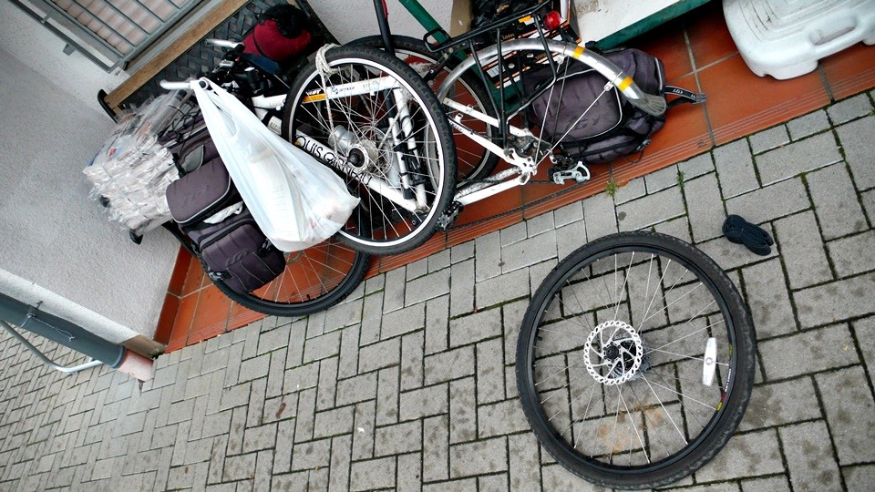
雖然知道後輪有漏氣的問題，但也只是胎壓下降罷了，這次睡了一覺起來，整個輪胎是完全沒有一點氣，就跟被惡作劇的人給放掉一樣。
難道是被什麼東西給刺破了嗎？
心裡雖然很狐疑，而且覺得可能性不高，但還是拆下輪胎好好的檢查一下比較保險。
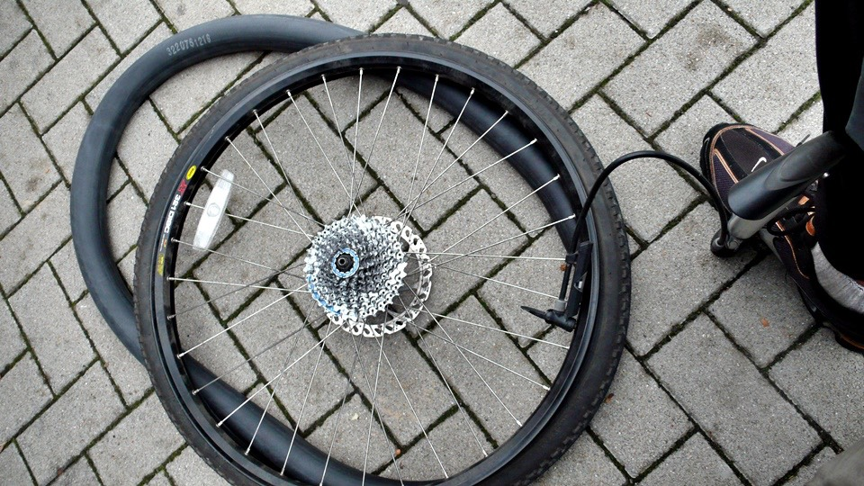
本來以為換了新的輪胎之後，這一路騎到巴黎都不可能再爆胎，裝著工具跟備胎的行李包都不打算再打開來，結果還是免不了。
檢查的結果找不到任何破洞，外胎也看不出有任何的損傷，將內胎打氣之後想用聽的找出漏氣的點在哪裡，一樣也是找不到。
就這麼又重新的將輪胎打滿氣，然後裝回車上，感覺就是白忙了一場，可是為什麼好端端的輪胎會整個沒有氣呢？
在我做上述動作的時候，這次攜帶的多功能把手陣亡了，整個分解掉，變成如此淒慘的情況。
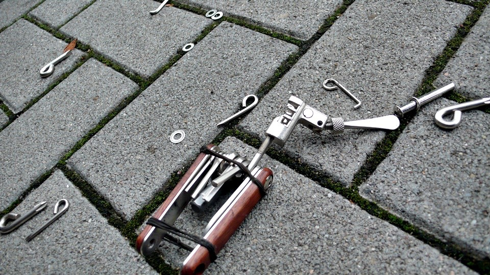
這次的旅行給我一個經驗，就是與其多帶幾隻確定會用到的把手，而且一個功能就帶一隻順手好用的。
也不要帶支一大堆功能，可是大多派不上用場，而真正需要它的時候，用起來又很彆扭，修車修的一肚子火都有可能。
將後輪給裝回去，重新牽車準備出發，牽著牽著小多又賴著不肯走了，這次是鏈條打結。
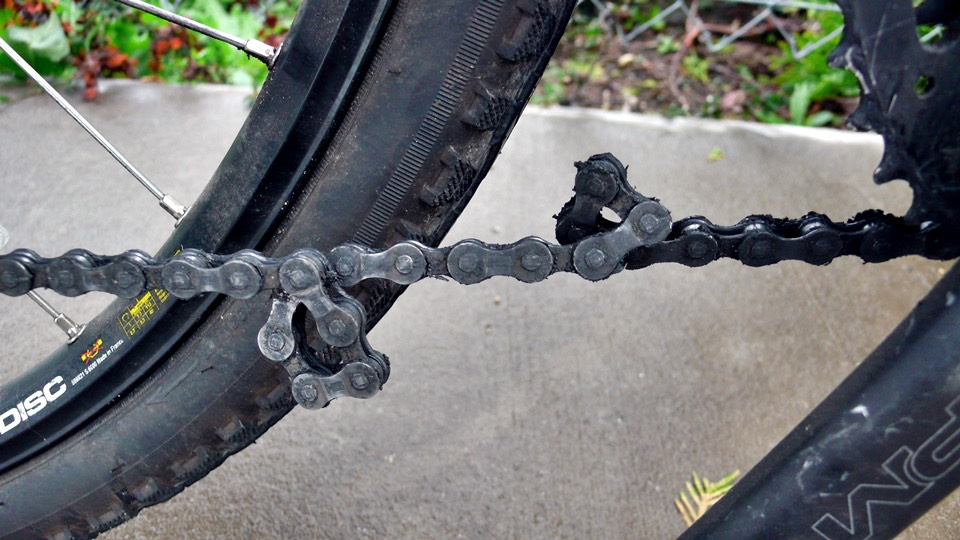
這一條是新換的耶，換個輪胎就搞的鏈條打結也未免太遜了一點吧？
戴上工作用的手套將鏈條翻轉回原本的樣子，本來以為這樣就沒事了，但事情大條的才剛開始。
鏈條打結的緣故，結果有一小段彎曲掉，導致騎乘的時候，後變速會不斷的上下跳動，不論調到哪一個檔位都一樣。
鏈條每轉一圈就跳一次，自動在兩個檔位之間變速，很難形容那種感覺，簡單的講就是：『這樣是教我怎麼騎車？』
下車試著用手暴力的將扭曲的鏈條轉正，但是鏈條太硬，手的力氣不夠，在沒有工具的情況下，根本就不可能轉回來。
只好慢慢的騎著車，用時速十公里的速度往邊境走去。
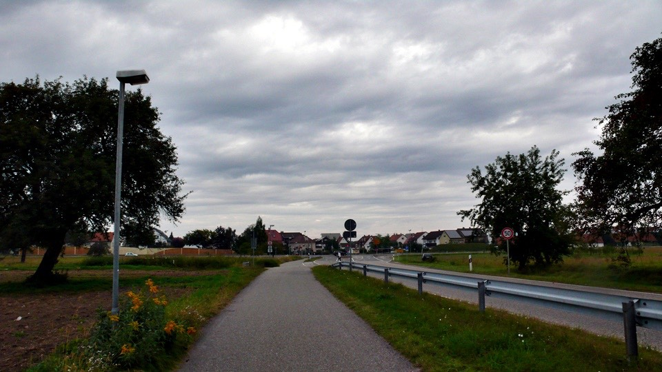
早上下過毛毛雨，天氣蠻陰的，有一種不知道什麼時候還會繼續下雨的感覺。
目前距離邊境大約二十公里，德法的邊境在這一段是由一條河所區隔，河的對岸就是法國，目前所在當然就還是德國。
看著地圖說明，要往下再騎好一段路到一個大城市，那邊才有橋樑可以過河，地圖在河岸邊雖然標示了很多路，但是都沒辦法通到對岸。
當然不實際去看一下是不會了解情況是如何，果然沿著河岸騎沒多久，就看到渡船。
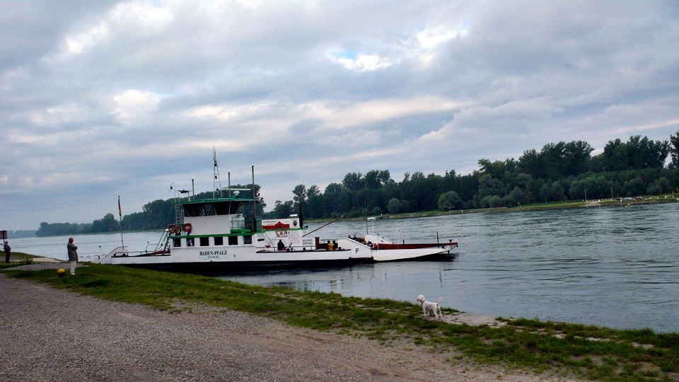
既然可以搭船就輕鬆的過河到對岸，那就能省下一段路的距離，不用進入城市也不用過橋。
碼頭邊的告示牌張貼著票價表，完全看不懂在寫什麼，不是我看不懂德文的問題，而是它整個寫得也太複雜了吧。
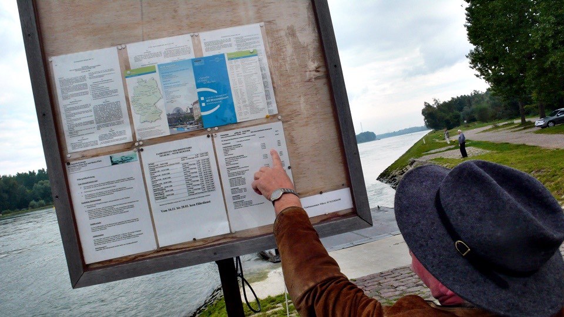
剛好有一個帶著孫子要過河的老阿公幫我看一個人加一輛自行車要多少錢，答案是一點五歐元。
還好身上的盤纏還夠付，今天是星期天，商店都關門，除了這次的渡船費之外，想花錢也沒別的地方。
前後五公里就只有這麼一個碼頭、這麼一艘渡輪，告示牌只寫了價錢，沒寫發船的時間。
再請老阿公幫我問一下清理甲板的員工，什麼時候會開船呢？
員工也沒有明確的答案，因為船長跑去喝咖啡了，等他悠閒完回來才有辦法開船，但是船長什麼時候回來就不清楚了。
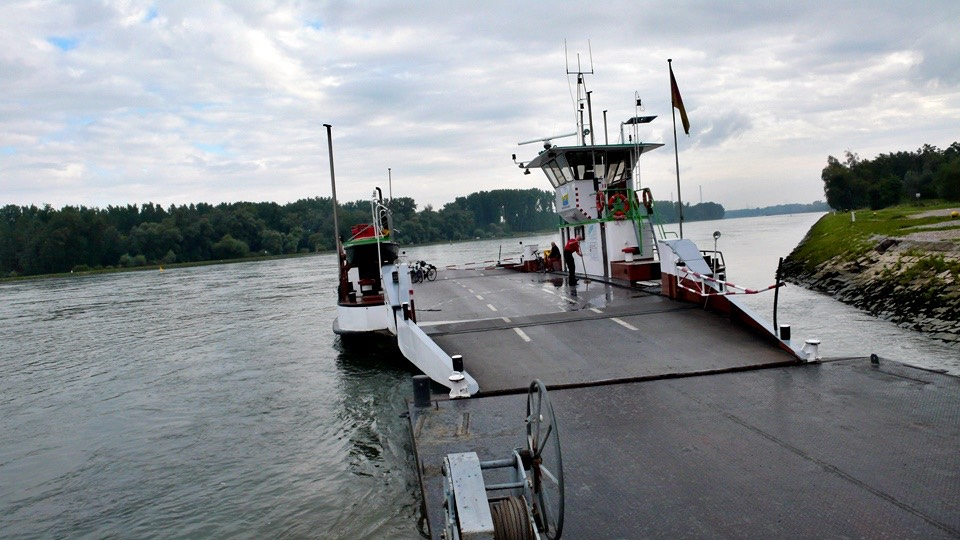
那就先買票上船慢慢等，反正搭船過河可以比過橋省下至少一個小時的工夫。
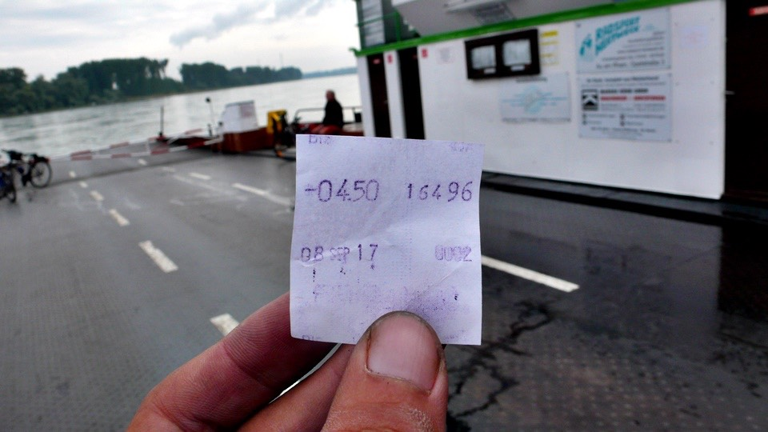
付過一點五歐元之後拿到的就是這一張小紙片，所有的資訊沒有一個是正確的，連日期都印成2008年九月十七日，票價則寫了四點五歐元。
船上還有網址，有興趣的人可以看一下這個網址中有什麼內容，如果有渡船價目表的話，請好好研究一下，就會知道它有多複雜。
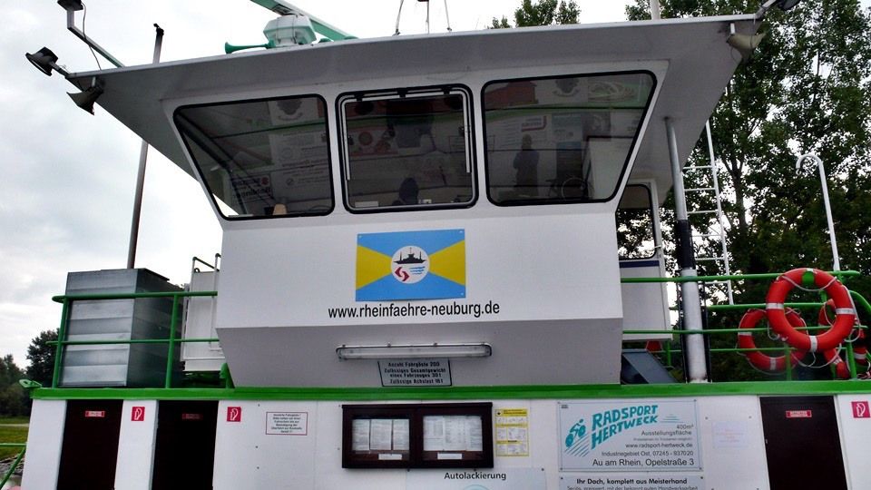
像我這樣帶著自行車要搭船的人還真不少，船上已經有三輛車了，汽車則一輛都沒有，這樣子生意未免太冷清寒酸了一點。
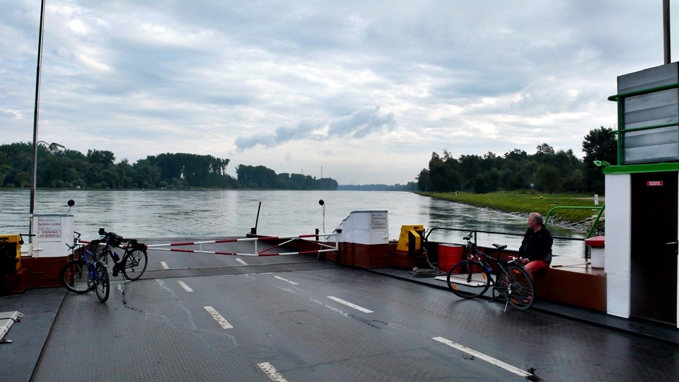
說到生意，付過錢之後才想起來，前幾次帶著自行車搭渡船都是免費的，這次則要收錢，大概不這麼做的話沒辦法營生吧。
在船上等待的時間我可一點也沒閒著，拿出沾滿黑油的髒兮兮工作手套，繼續努力的將彎曲的鏈條給扳正。
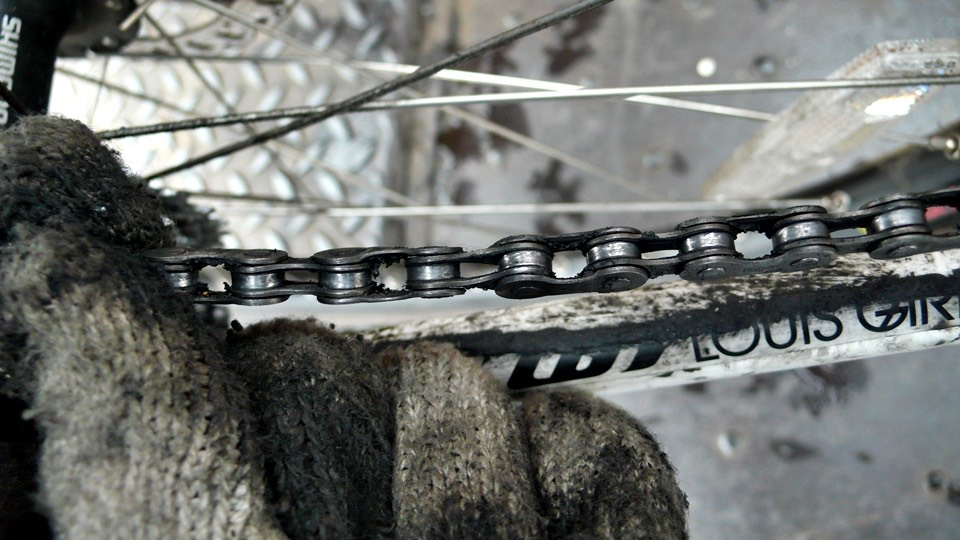
照片中可以很清楚的看見中間那一段鏈條整個彎掉，用手怎麼扭也扭不回來，最後的處置方式是跟早上一樣，重新讓它打結。
這次打結成反方向，然後借力使力，用力一扳，鏈條的形狀就稍微回正了一點，不敢太粗魯的修理，萬一被我弄斷的話，那接下來的路就不用騎了。
修理的當中，船長喝完咖啡回來了，船隻很平穩的開動，我一點感覺也沒有，等我發現的時候已經離開了岸邊。
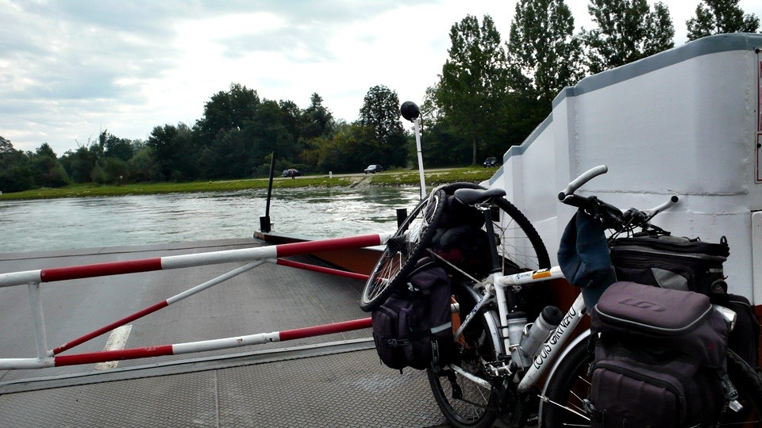
趕緊脫下髒兮兮的手套，拿出相機拍幾張照片。
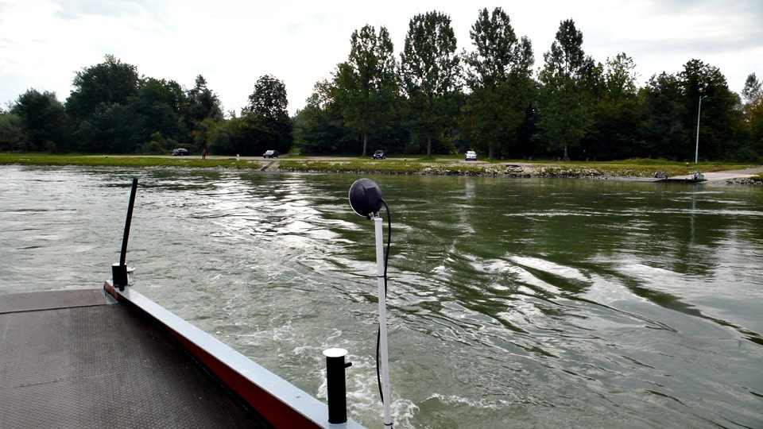
大約兩分鐘的時間就到對岸了，很省時間，一點點小錢就當給船長喝咖啡吧。
河的對岸就是法國，沒錯～就是這麼簡單，已經入境了。
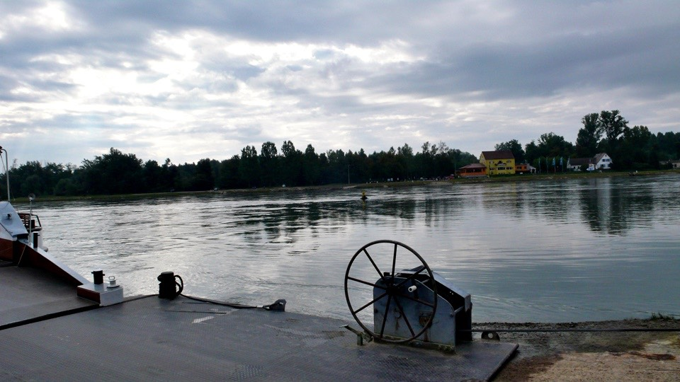
沒有任何的海關人員要檢查證件或是行李，輕輕鬆鬆的就從德國進入法國，連一丁點出國的感覺都沒有。
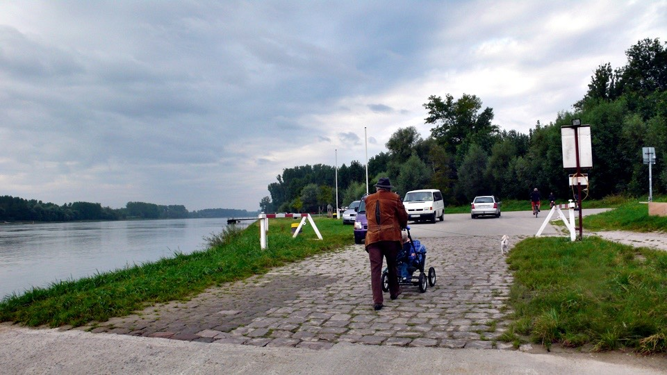
謝謝老阿公幫我看票價，在對岸的時候用德文跟他說謝謝，到了彼岸則用法文跟他說再見。
一樣是自行車的指示牌，有一個小小的不一樣，在地名的後面加上了小括弧，裡頭寫著『F』。
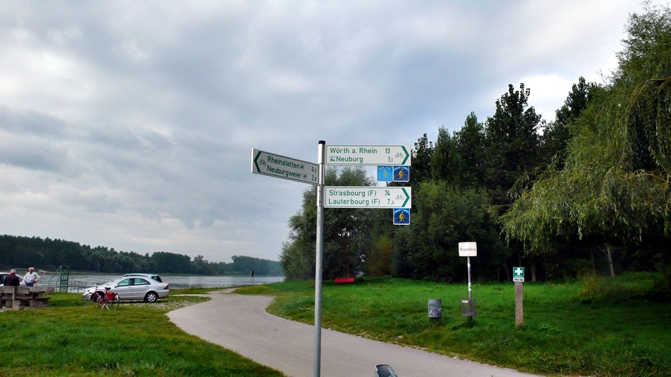
鄉親呀～這就是法國的城市啦～
突然出現一張很不搭嘎的照片，這邊到處都是牧場，剛好我在吃路邊摘的蘋果，然後大白馬跟小黑羊就靠了上來。
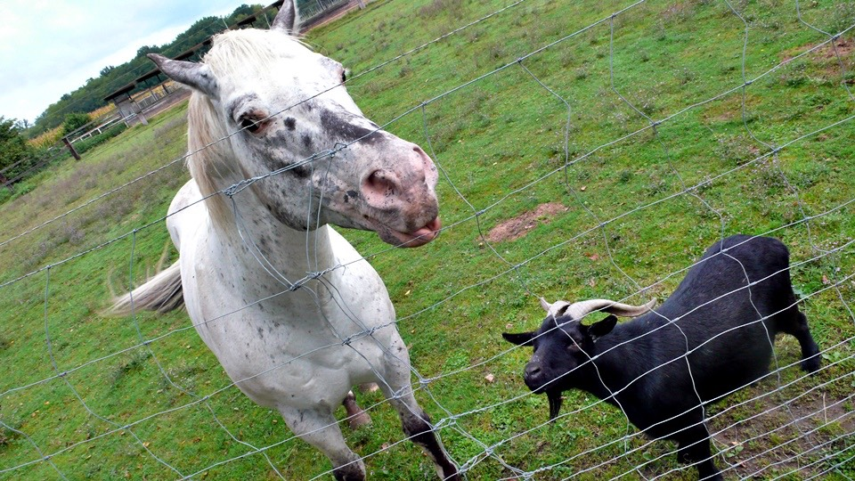
有點像是心理測驗，請問你會把蘋果核分給大白馬還是小黑羊吃呢？
進入法國的第一個城市，第一印象是：騎自行車的人未免也太多了吧！
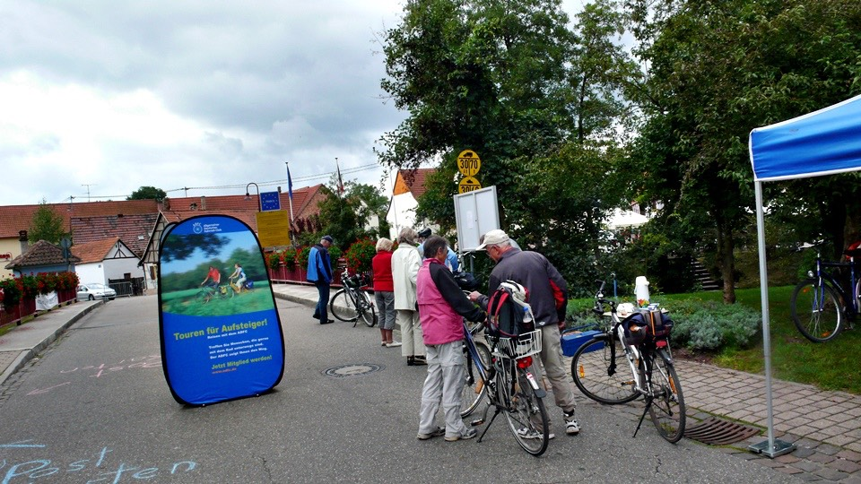
這是我所認識的法國嗎？
兩年前環法的時候，被一大堆汽車專用道、禁止自行車通行搞得我快要發瘋，
有可能只過了短短的兩年，就跟德國看齊，修建了如此良好的自行車道？
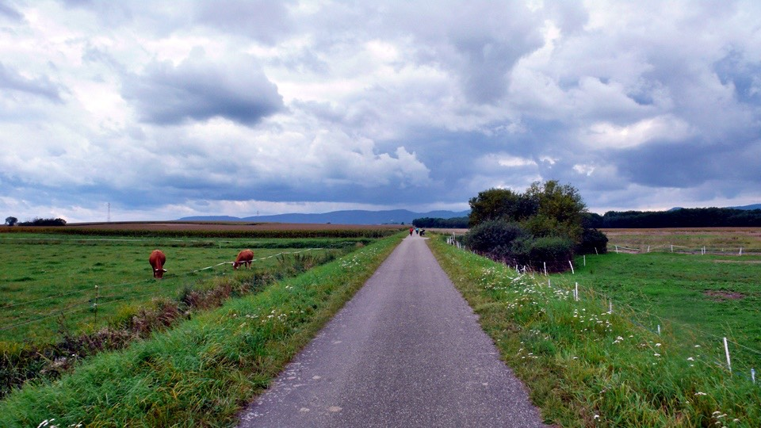
騎在這邊感覺實在很爽，景色優美、氣溫涼爽、道路平坦，而且沒有汽車的威脅。
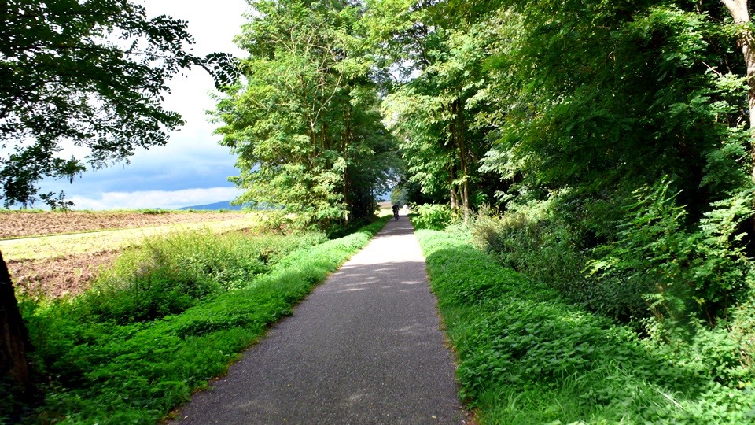
沿路跟著自行車的車潮往城市走，實在太多人在騎車了，路邊只要有草地或是桌椅的地方，就會看到騎自行車的人在旁邊野餐。
心中小小的期待，也許某一個野餐的家庭會招手叫我過去一起吃。
期待終究是期待，這麼好的事情並沒有發生，啃著吐司當早午餐往城市走。
進入城市之後有點傷腦筋，我常常一個人誤會些什麼東西還不自知，比如說Peter給我的地圖，我一直以為它是歐洲地圖，
靠這一本就可以一路騎到巴黎都不會迷路，但等進入法國之後，我才發現它只是德國地圖而已，稍微涵蓋了一點德法邊境的路。
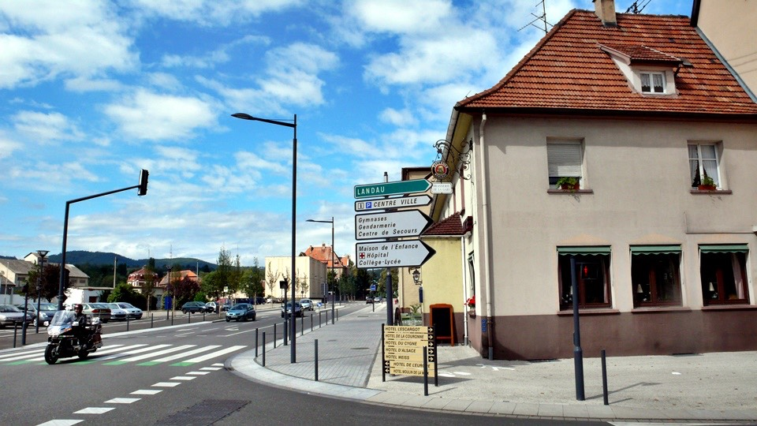
要靠這一本騎到法國是不可能的事情，而法國的路，複雜的情形跟德國相比簡直不遑多讓。
短短四天的行程讓我很不想去買地圖，只好利用城市中的資訊牌研究往巴黎的路該怎麼走？
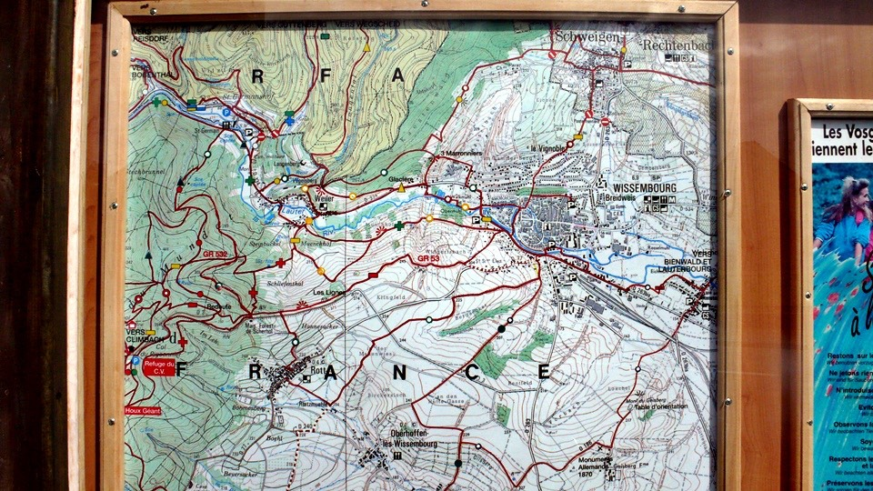
雖然只有周邊的一小段地圖，但勉強湊合著也比沒有好，先研究怎麼離開這裡，看能不能接到大條的馬路往西走。
德法的國境是河流，並非高山，但不代表不需要爬山，一進入法國之後有一段路都是崎嶇的山坡，雖不陡峭但也夠瞧的。
好消息是，進入法國之後天氣漸漸的好轉，連日的陰霾開始有散去的感覺，繼續保持著藍天白雲的天氣吧～
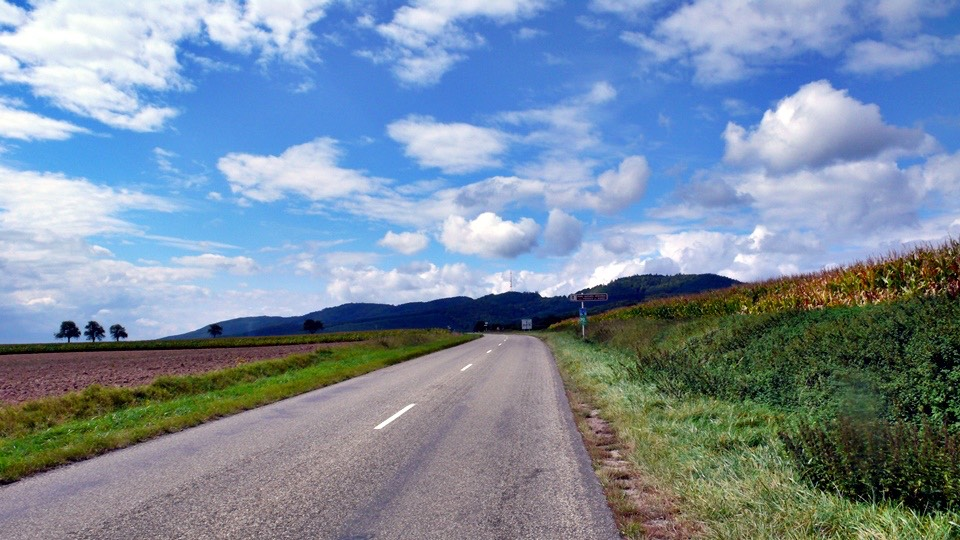
騎在這些山路說陡不陡，說累倒還真的蠻累人的～
在這邊騎自行車的人一樣是多到數也數不完，穿著相同車衣的團體練車也是隨處可見。
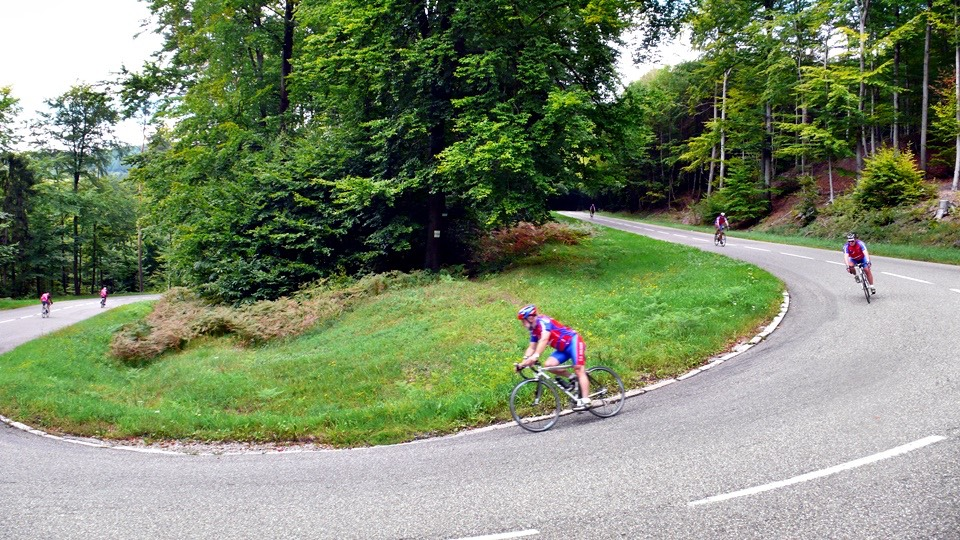
爬的這麼累，究竟爬了多高呢？
說來還真不好意思，才海拔四百多公尺而已，難道是這陣子都在啃吐司的關係，體力變得有點虛，沒有之前天天吃大餐的時候那麼樣精力充沛？
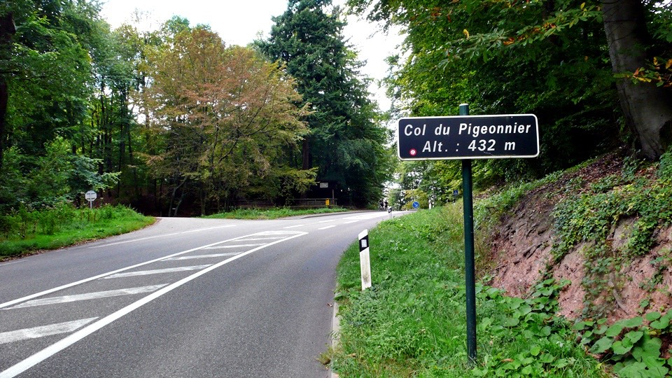
在這個坡頂的前端停了兩輛轎車，一個人站在路邊，當我靠近的時候就揮手請我停一下。
他們是說著流利英文的德國人，剛才被他們超車，看著我騎車還帶著一大堆行李，最引他們注意的還是小多掛著的兩個輪胎。
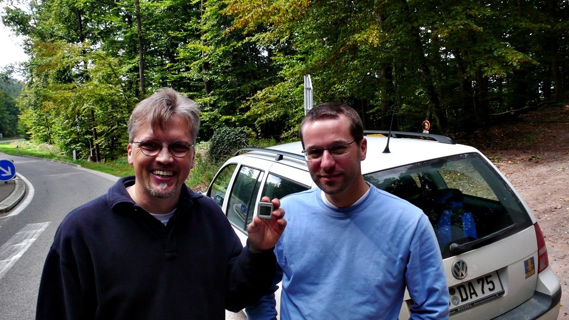
他們手中拿著是我的單車碼表，累積里程一萬三千六百八十八公里，看著這個數字，兩輛車的人，一起大喊『你瘋了～』
原來是兩個家庭，負責拿相機的是一個小女孩，歐洲真是很有趣，像這個時候一般不都是爸爸負責拿相機拍照嗎？
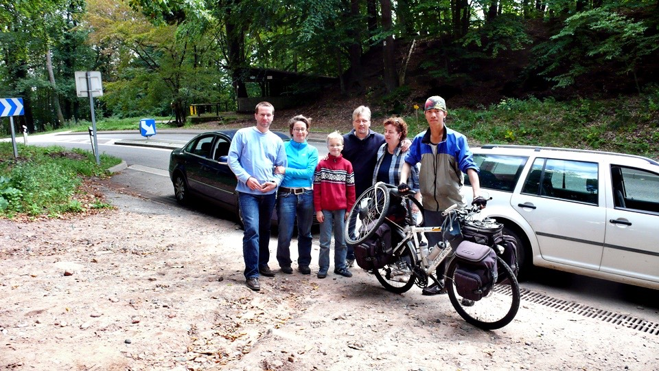
德國的爸爸則是叫出車內的小女孩，把像機拿給她，說幫大家拍個合照做紀念，小女孩也真的乖乖的去拍照。
拍完照之後他們問我要騎到哪裡去？
結果目的地相同，他們也要去巴黎，機不可失，問一下其中的一個爸爸有沒有法國的地圖，能不能借我看一下？
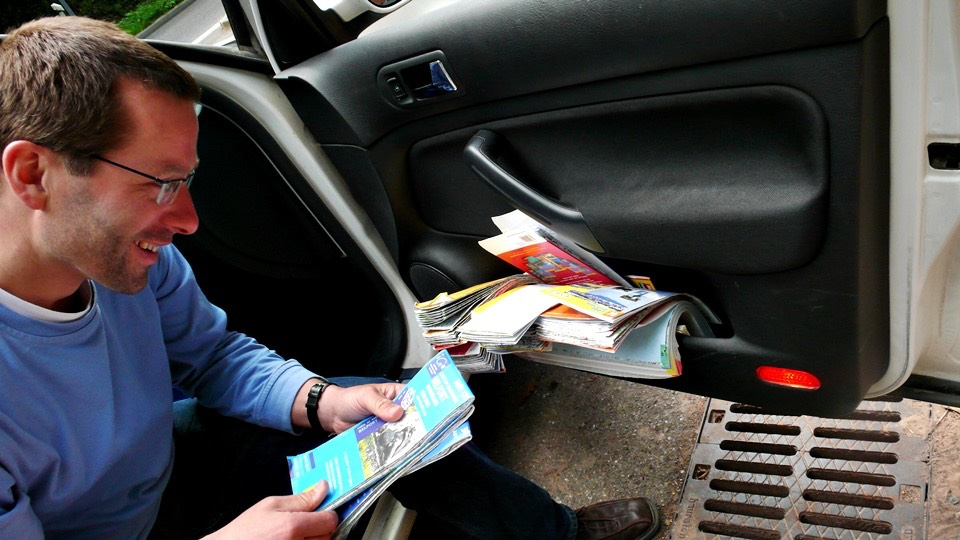
爸爸的車內有好多本地圖呀，車門都快要被塞滿了，東翻西翻的問我哪一本比較適合？
最後拿了一本『一公分比十公里』的全法地圖，如果我騎到巴黎還沒騎夠的話，還可以往下接著騎。
趁這個機會將地圖攤開，先找出自己的位置，然後研究有哪些路通往巴黎，拍張照片並且快速的記錄在筆記本中。
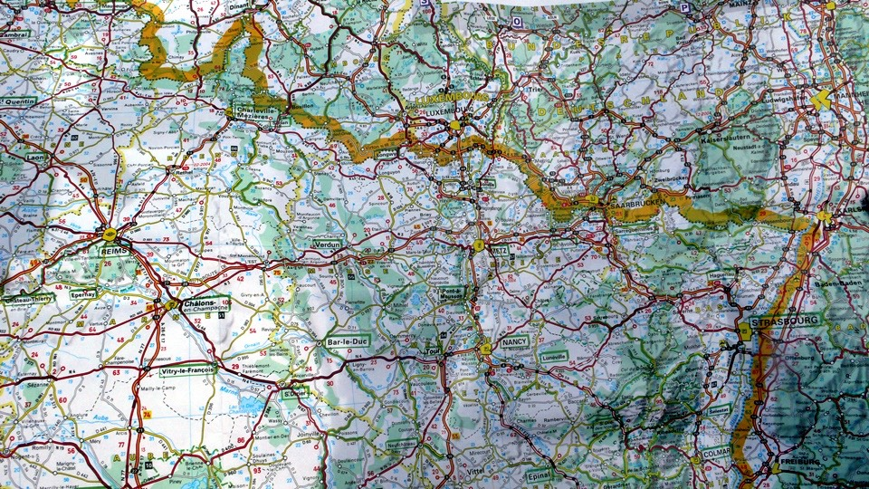
寫沒幾個字而已，爸爸就說這一本送給我，不用寫的那麼辛苦，祝福我一路騎到巴黎都很平安，他們今天晚上就會先一步抵達了。
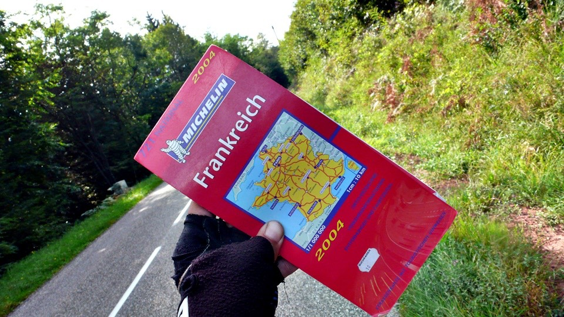
就這麼入手了法國地圖，好像在玩RPG遊記，被陌生人攔下來，閒聊兩句，然後拿到一本地圖做為贈品。
接下來一團迷霧的路線瞬間明朗，騎車旅行沒有地圖感覺就是少了一點什麼東西，有地圖就感覺心安很多。
從地圖上看起來往巴黎的路有兩條，一條是N3，另外一條是N4。
在法國，A開頭的才是高速公路，其它還有N、D、C、L這些字母開頭的道路，理論上來說除了A之外的道路都可以騎自行車。
實際上則是很多道路都是規劃成汽車專用道，而且從地圖上完全看不出來，一定要等騎到了才會發現。
接著又要頭痛的研究怎麼繞路，之前規劃的路線就完全被推翻掉，一直反覆這麼痛苦的進行下去，就是兩年前環法時的記憶。
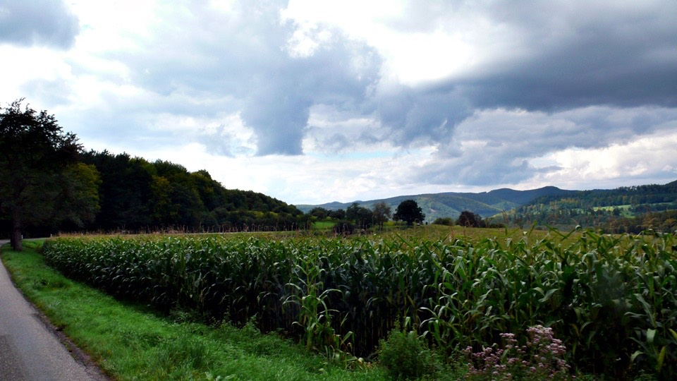
爬著不怎麼高的山，景色還蠻開闊的，種的農作物差不多，這個時節到處都是尚未收成的玉米。
山中的小小鎮，某一戶人家的門口有一個超級迷你的加油站，連加油站都做得這麼小，就知道這邊也沒什麼太多商業性質的東西。
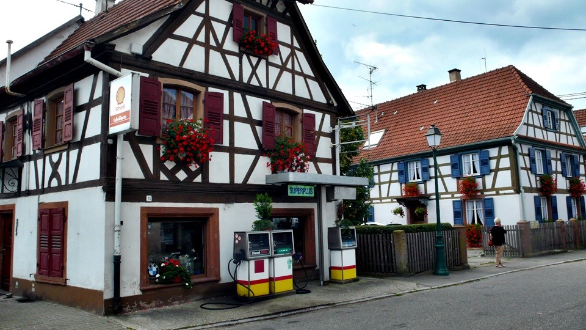
大多都是純住家，教堂是一定有的，配上一些酒吧、麵包店，還有一個東西也是處處都有，那就是郵局。
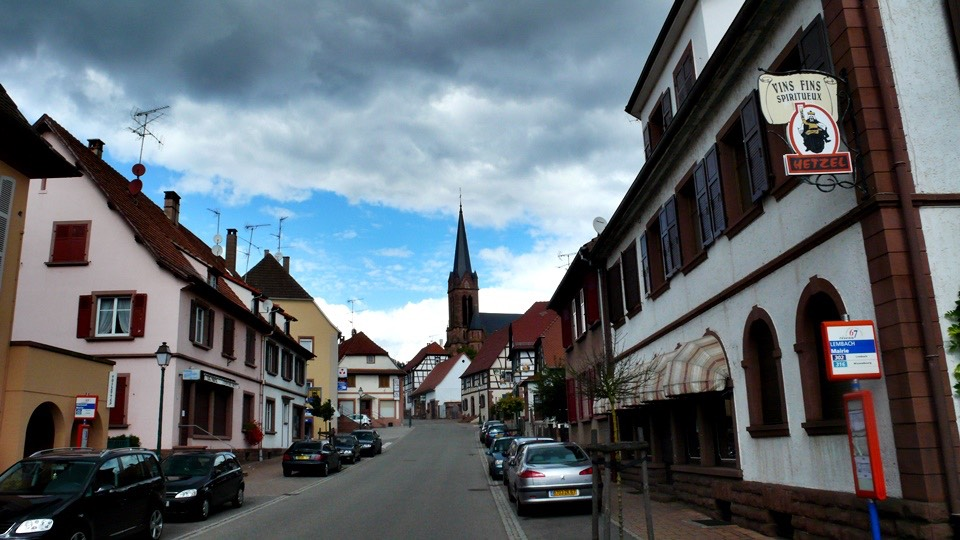
付過船費之後，身上可支用的錢變得更少了，有一點想拿美金去換歐元，以免到時候需要花用的時候沒有錢。
這個想法浮現的時候，正好是星期天，所有你想得到的店家都是關門休息的，只好再撐一天，明天如果有看到銀行再去換錢也不遲。
媽～我有吃飯啦，不用擔心，雖然只是吃吐司，但是一樣會飽，沒有餓肚子。
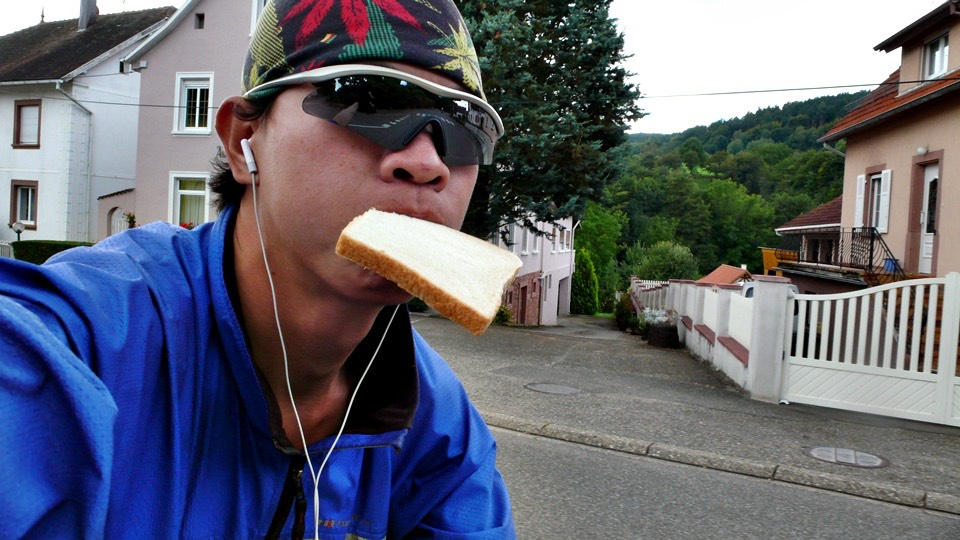
小小的水龍頭，只要一按下去就會猛然的流出冰涼的水，這應該是山泉水吧，趁這個機會洗一下頭巾，喝了一肚子的水，裝滿水壺繼續上路。
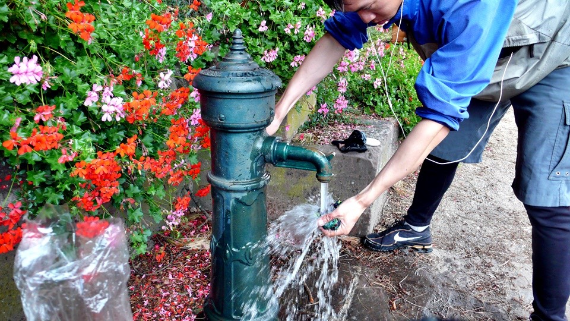
肚子裡裝著吐司跟泉水很有飽足感，就想說自己剛吃過大餐就好了，等騎到巴黎之後再好好地吃點美食慰勞一下自己。
另一個山中的小鎮，剛才雖然入手了地圖，可是這些小鎮在地圖上完全都找不到，全法的地圖比例尺果然很差。
用這一本地圖騎車，要有會搞不清楚身在何方的心理準備。
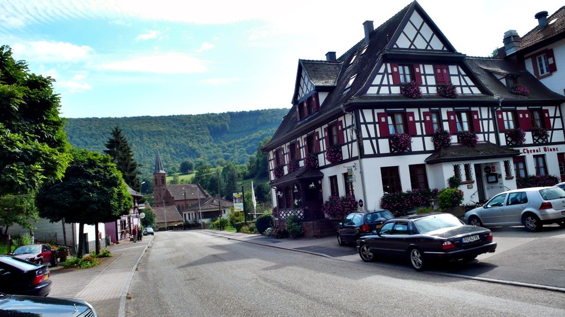
嘴饞的時候還有一些糖果可以吃，另外還有一包昨天拿到的胡桃，外殼超級硬，用手根本不可能捏得破。
放在地上踩碎它，腳勁要拿捏的剛好，如果整顆都踩扁的話那就要混著砂石吃胡桃了。
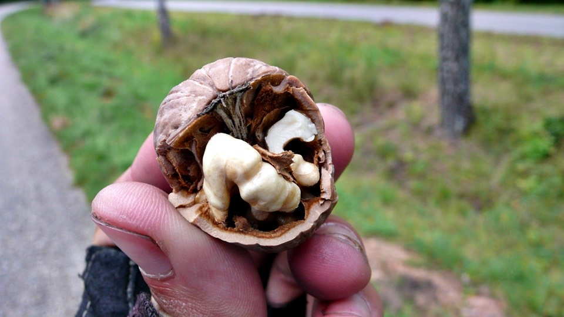
胡桃的味道還不錯，剛入口的時候有一點點苦澀，嚼久了就會有濃郁的香味，吃這個雖然不能填飽肚子，但是可以換點口味已經很不錯了。
一直吃糖果，吃的我味覺都快要麻痺掉。
除了小不拉機的山中小鎮，也有這種有著誇張城堡的古代碉堡，遠看真是壯觀到嘴巴都合不起來。
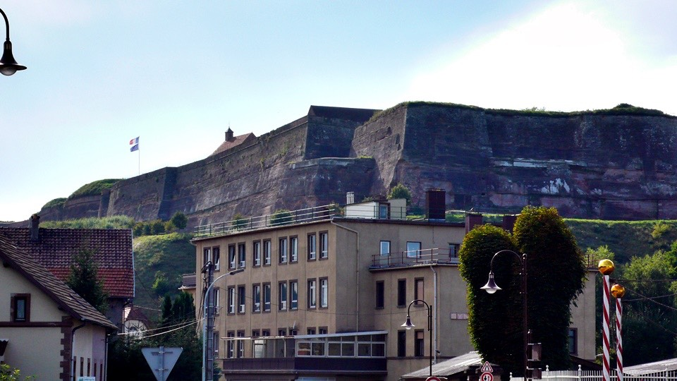
這樣的觀光景點就可以去鎮裡面找看看有沒有旅遊服務處，但是目前手上已經有地圖，就不去打擾他們了。
今天騎車的時候，後輪又漸漸的消氣，直到幾乎沒氣的狀態為止，一整天停下來重新打氣了三次，才有辦法繼續騎車。
我想後輪一定是有某個地方破洞，但是破的太小所以沒發現，這樣一邊騎車一邊打氣實在很累人，而且騎著沒氣的車感覺很笨重。
想把後輪的內胎給換掉，但又覺得既然打滿氣還可以騎上幾個小時，那就不要浪費時間處理，多一點時間不如拿來騎車比較實際。
沒事我幹嘛騎在草地上呢？
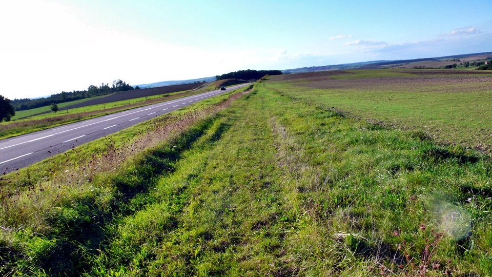
旁邊的馬路是D開頭的道路，莫名其妙的居然是汽車專用道，搞得我只好找自行車道繞行。
這是在德國騎車養成的習慣，在法國可行不通，因為這邊的自行車道規劃得實在很不好，被搞到無路可走是常有的事情。
後來沒辦法只好去騎汽車專用道，想說只要在某一個交叉路口讓我轉出去就好了。
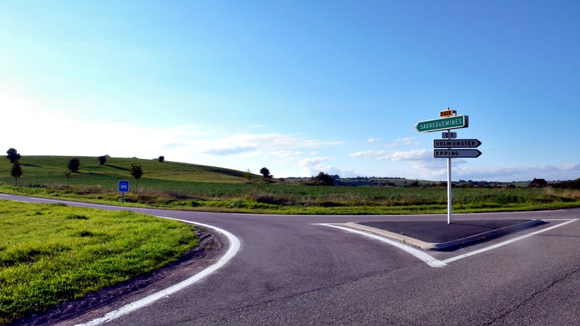
轉是轉出來了，但是看地圖研究了半天，卻找不到替代的道路，苦思卻無解，又重新騎回汽車專用道。
那個藍色汽車的小牌子越看越覺得討厭，有時候還會同時設立一個禁止自行車的牌子，加上雙重禁止令阻擋我的去路。
沿路騎了十幾公里的汽車專用道，想說沒多久就會被警察給攔下來吧，但很幸運的沒事，一口氣騎完進到鎮上。
接著要走N62，N開頭的喔，照樣是汽車專用道，真的是見到鬼，那叫我該怎麼騎？
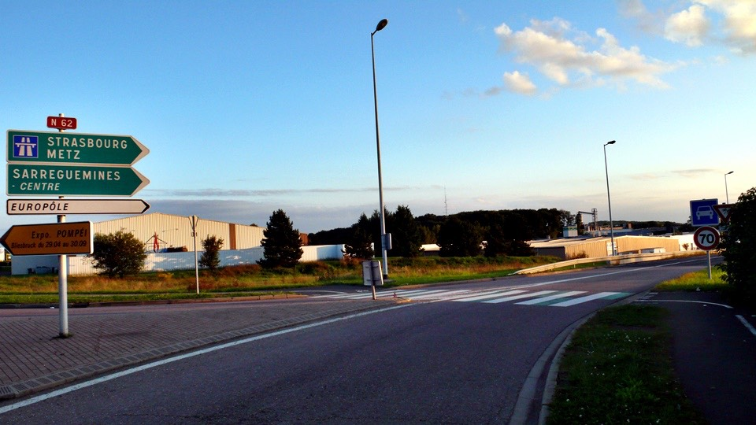
這些都是剛拿到地圖的時候所規劃的路線，如今已成泡影，只好翻著地圖研究該怎麼往巴黎，正確的來說，此時只想知道該怎麼騎出這個城市。
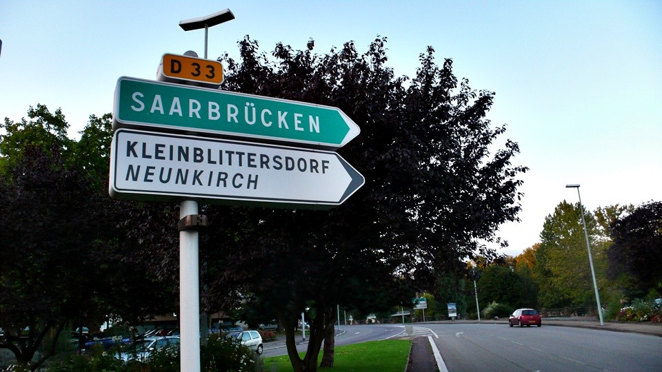
看到這個路牌覺得有點熟悉，SAARBRUCKEN，這個城市的名字好像就是Peter的朋友居住的地方。
雖然這一條路可以騎，但還是不要去麻煩別人比較好，而且也不知道確定的地址，最後這幾天就自己想辦法活下去吧。
既然不給出城，那就選擇入城，很快的今天已經夕陽西下，入城的目的就是要詳細的城市地圖，那首推旅遊服務處了。
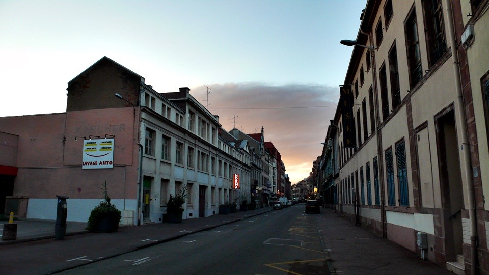
找是找到了，但是已經關門打烊，別這麼狠心呀～有個無助的旅行者需要你們伸出援手呢～
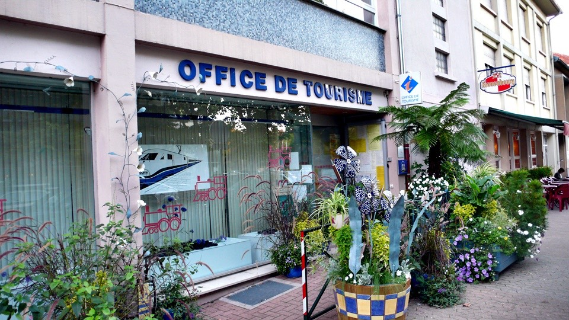
還好門口的告示牌有張貼城市地圖，研究完畢之後拍張照帶著走比較保險，這時已經找到出城的路，只希望它真的能讓我順利騎車去。
天空開始黑了，為了用三天半的時間抵達巴黎，每天的規劃都是騎一百五十公里為基本，能多騎當然是最好，少的話...接下來就會很辛苦。
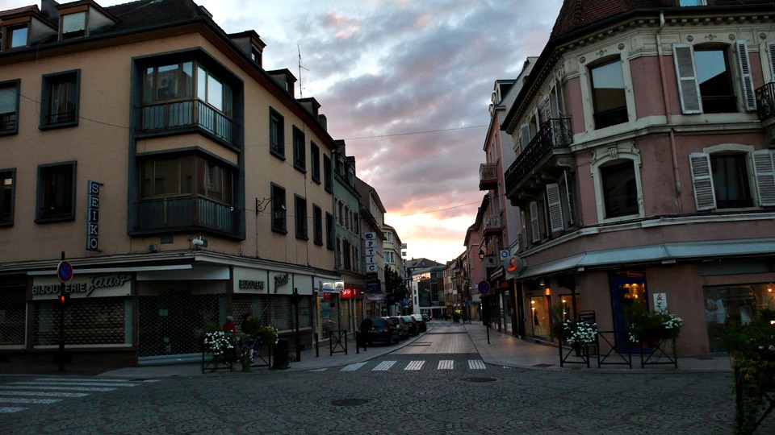
穿越夕陽中的人行區，從街邊的窗戶可以看見一間間生意興隆的餐廳跟用餐中的人們，此時已經是晚餐時刻了。
如果是愜意一點的旅行，我也應該在這座城市停留，找一間旅館卸下行李，洗個舒服的熱水澡，然後去街上挑一間美味的餐廳大快朵頤。
但這些都不會發生，目前只有繼續往下騎才是往終點的路，現在多吃一點苦，到時候再來好好的徹底休息吧。
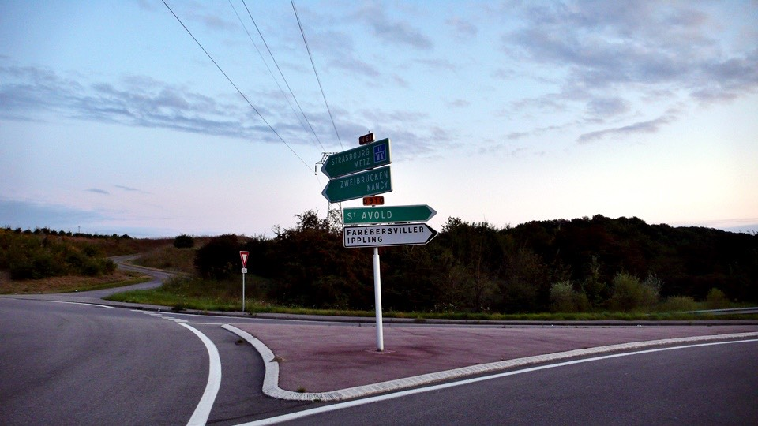
多虧旅遊服務處的地圖，讓我找到脫困的D910道路，這次它就不再是汽車專用道，天色再半小時左右就會變黑，趁機還能騎多少算多少吧。
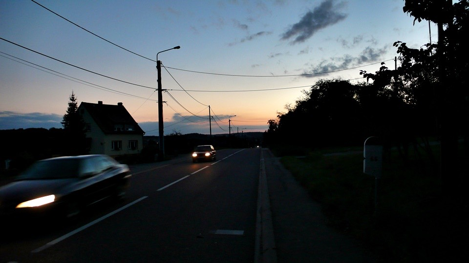
有想過夜騎的可能性，晚上開著燈照明，晃晃悠悠的，雖然夜裡很冷，但還是有辦法騎的了車吧？
教堂，還是一樣大門深鎖，這時候水壺是空的，沿著教堂四周繞了一圈，也沒發現水龍頭。
進入法國之後，兩個東西變得很難找，分別都是我最需要的水龍頭和插頭。
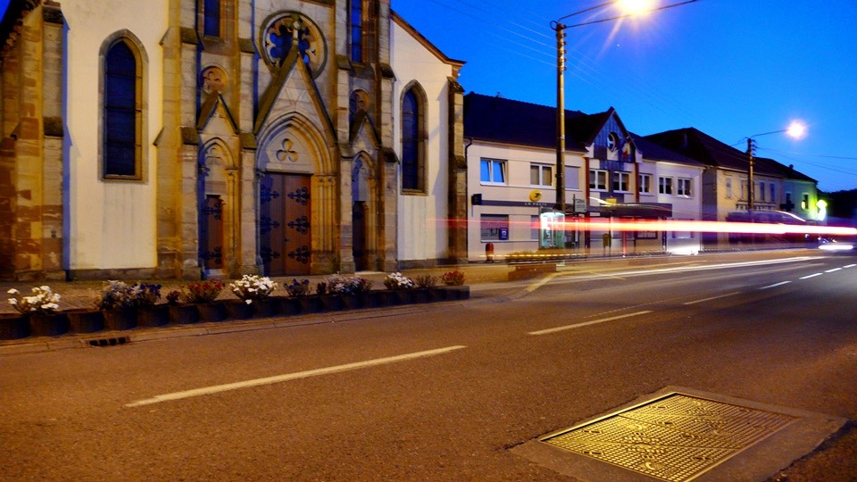
夜騎想起來好像很簡單，實際做起來會吃足苦頭，入夜之後郊區沒有任何的路燈照明，除了路過的車輛會偶爾照亮路面，完全是漆黑一片。
小多那微小的照明並不足以保障騎車的安全，在夜色中才騎了一小段路而已，腦袋裡馬上浮現出兩年前在法國夜騎，結果摔車的往事。
那天夜裡，雙手雙手血肉模糊的坐在漆黑公車站，將因為摔車而爆胎的自行車修復，然後忍著痛繼續往下騎，結果睡在冷的要命的廢棄加油站。
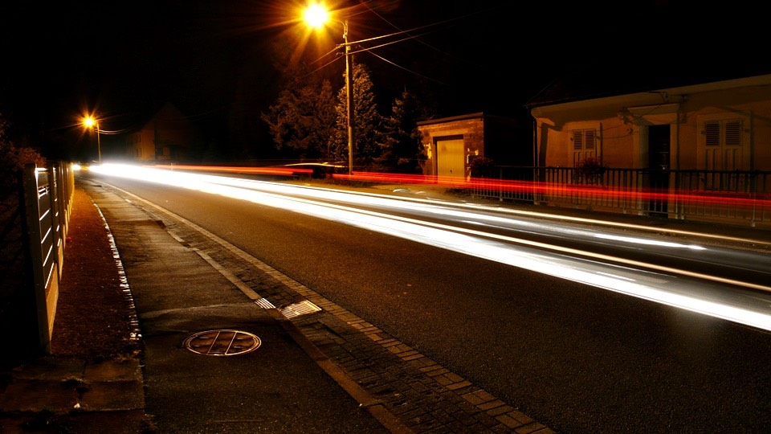
回想完畢，天空很快的就變得漆黑一片，路過的車輛可不會因為天黑而減速，閃著紅色警示燈的小多還是很不顯眼，駕駛要靠近我才會看到。
急忙閃避的下場就是我跟對方都嚇一大跳，免不了又要被鳴喇叭示警，想利用晚上趕路的計畫有點泡湯，那就找地方休息吧。
養足精神明天早一點出發繼續騎，這幾天都不打算利用白天的時間寫遊記，騎車時間相當充足，就不相信一天騎不到一百五十公里。
放棄夜騎之後就開始尋覓過夜的處所，大門深鎖的教堂、下班關門的市政府，看了幾個地點都不是很滿意。
睡公車站則是沒辦法，法國的公車站就是三面完全透明的的塑膠板，遮蔽度是零，椅子又小又窄，看起來就很難睡。
而且目前我口好渴，房子外面好不容易看到水龍頭就會過去轉開看有沒有水，十個有九個都是乾的。
最後總算給我發現這個不斷湧出的水源，夜裡已經夠冷了，這些水更是冷到幾乎是結冰的程度，裝滿了水壺也不敢大口的喝。
怕喝太冰的水，等一下肚子又要受不了。
看到這個水源，它除了可以補充飲水之外，還有存檔的功能，晚上就在它的後面，一個像是迷你公園的地方過夜。
就是這一棟超級小的木屋，跟小多併排在一起就知道它有多小，這個是給小孩玩的小木屋，今晚要窩在裡面睡覺。
簡單的評估一下，睡墊跟帳篷也就不用拿出來了，因為根本就沒有搭建的地方，就只裹著睡袋坐在地板上，靠著木板睡。

睡覺的姿勢很累，半夜屁股跟腰椎都痛得很難過，兩腳也因為血液循環不良而麻痺，必須不斷的改變睡覺的姿勢。
入夜後越來越冷，冷到不敢相信現在才九月，為了怕嚇到自己，所以沒去看溫度計，只多拿了一件厚的衣服，將整個頭給包覆起來。
隔絕了冷空氣之後，就變得比較好睡，除了每二十分鐘要換一個姿勢之外，勉勉強強也算是還不錯的過夜處。
會選擇這邊都是因為手錶的天氣預報顯示會下雨，才盡量的挑了一個有遮蔽物的地方，結果就選擇了這裡。
小時候玩這種木屋覺得很有趣，長大之後在裡面睡一個晚上可是一點也有趣不起來，除了冷～還是冷～冷到骨髓裡
繼續閱讀：9.10 逆我者，慢
歐洲-歐元－ 1：45 台幣
9.9
總計：1.5元
渡船1.5元